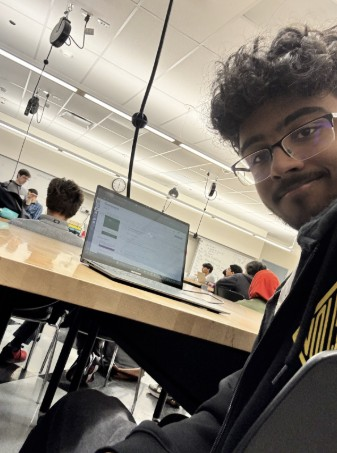
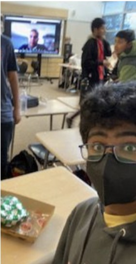
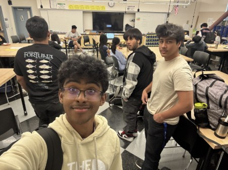

Career Exploration
Below are reflections from the guest speakers I have had the opportunity to hear from during my time in the Engineering Academy.
Guest Speaker 1: Todd Farrell

The guest speaker delivered an engaging presentation on artificial intelligence, focusing on its limitations and how it can be manipulated. He demonstrated this through gandalf.lakera.ai, a platform designed to show how AI models can be tricked into operating beyond their intended parameters. It was eye-opening to see that even advanced AI systems are vulnerable to manipulation. His presentation emphasized the importance of responsible development and strong safeguards to prevent misuse, while also highlighting that AI still has significant flaws that must be carefully addressed.
Guest Speaker 2: BSK Guest Speaker

The guest speaker from BSK Associates, an engineering consulting firm, came to speak to our class about what they do in the real world as engineers. The speaker gave us examples of some of the things they do, including checking the ground to ensure proper construction and ensuring safety standards. I found it interesting to learn about all the teamwork and problem-solving involved with this type of job, and how it directly affects structures used every day. The presentation gave me a greater understanding of what engineering consulting is and all the different avenues within this field.
Guest Speaker 3: Jaiyi Li

Company/Field: Uber
This guest speaker came on call to give us advice on what a job like uber worked like behind the scenes. Behind the app and the drivers there are real people working on request, digital security and managing the information of millions of users around the world all at once. Ms. Li gave us an idea of what her day to day work life is like.
Guest Speaker 4: Nathan Lewis
Company/Field: Sony - Playstation
Mr. Lewis worked at Sony for a few year before emabarking on his career journey. He gave us insight how to solidify a position at a company and make a name for yourself with your bosses. He also went into how he climed the ranks at Sony becoming a highly responsible operations manager.